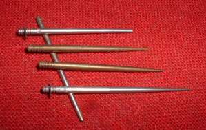
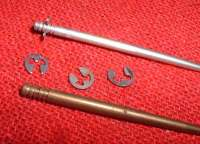
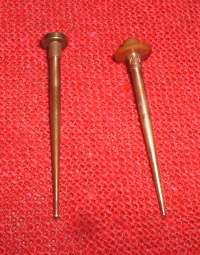
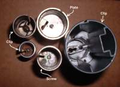
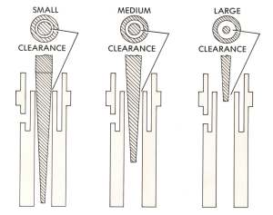
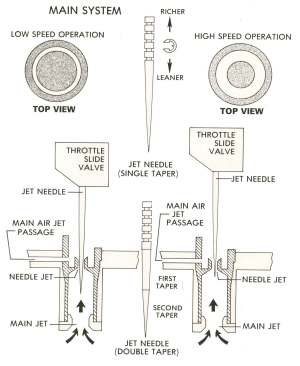
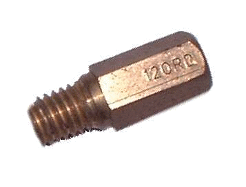

Jet Needles. Probably the most useful jet of all, at least to your average motorcycle tuner. The Jet Needle rides in the throttle slide. Jet Needles Come in lots of different sizes but the real beauty of the Jet Needle is it's adjustability. There is a clip and five little grooves that move the Jet Needle up (richer) or down (leaner) in the Needle Jet. Bad news is that many newer bikes have only one clip position. If you have a non-adjustable type, measure it and you may be able to get a replacement of the same size but with the five grooves. Another way is to place a small washer under the Jet Needle clip to richen the mixture. If you want to lean the mixture I guess you are out of luck. However, you probably will want to richen things up, so you should be OK.
The Jet Needle is held in the Throttle Side by a lot of different ways. Clips holding the Jet Needle to the slide seem to be popular. Also a little screw or even a plate held in by the throttle spring work good too.
 Jet Needle clip |
 No Clip Needle Jets |
 Different Jet Needle Retainers |
Jet Needles can be a simple taper or a be tapered in several stages. It controls the fuel mixture from about 20 % to 80 %. Jet Needles are easy to change, just move the clip. If you move the clip to a higher groove you lower the needle in the Needle Jet and make the mixture leaner. If you move the clip to a lower groove you raise the needle in the Needle Jet and make the mixture richer. Jet Needles cost around five dollars so you can afford to experiment with different sizes. All in all a very handy jet.
 Jet Needle in Needle Jet |
 Throttle Slide and Jet Needle |

 |
 |
Copyright © 1999-2015 dansmc.com. All rights reserved.